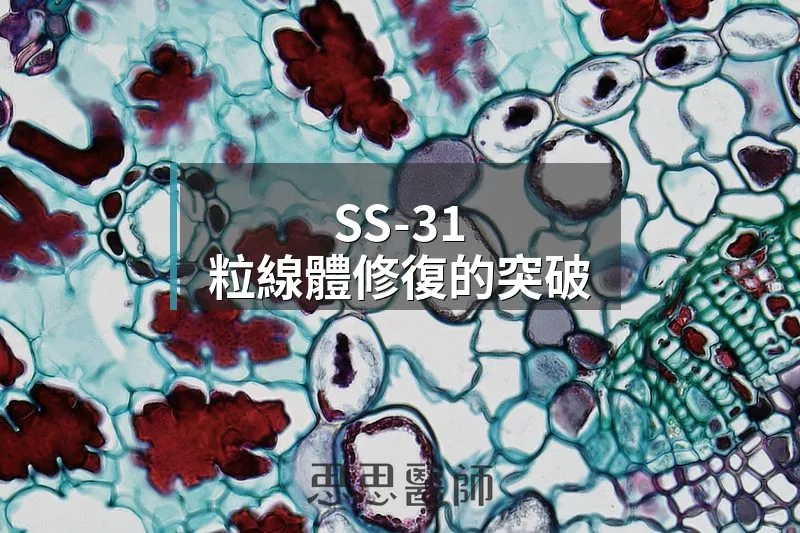

SS-31，粒線體修復的突破

2025 年 9 月，一個叫做 elamipretide 的藥物獲得 FDA 核准，商品名是 Forzinity。這個消息對多數人來說很陌生，但在粒線體研究的圈子裡，這是等了將近二十年的事。
elamipretide 就是研究圈裡更常聽到的 SS-31，一個只有四個氨基酸的合成小胜肽。它被核准的適應症是 Barth 症候群（Barth Syndrome），一種罕見的 X 染色體連鎖遺傳疾病，患者因為心磷脂代謝出問題，從小就有嚴重的心肌病變、骨骼肌無力和免疫功能低下。這是有史以來第一個以「修復心磷脂代謝」為機轉的核准藥物，意義遠超過一個罕見疾病的治療。
要理解 SS-31 為什麼重要，要先理解心磷脂（Cardiolipin）是什麼。心磷脂幾乎只存在於粒線體內膜，它的功能是把電子傳遞鏈的蛋白質複合物（Complexes I、III、IV）固定在正確的空間位置，讓它們組成所謂的「超級複合體（Supercomplexes）」，這個構型是 ATP 高效生產的前提。心磷脂一旦氧化損傷或結構改變，超級複合體就會鬆散，氧化磷酸化效率掉下去，活性氧（ROS）上升，粒線體進入惡性循環。
SS-31 做的事是進入細胞後直接累積在粒線體內膜，濃度比細胞質高出數百倍，然後緊緊結合心磷脂，穩定超級複合體的構型，讓電子傳遞鏈重新有效率地運作，同時降低 ROS（活性氧） 的產生。它不是補充能量，而是修復生產能量的機器本身。
Barth 症候群的臨床試驗規模很小，12 名受試者，每日皮下注射 40 mg，12 週交叉設計。初級終點沒有達到，但長期追蹤 48 週之後，六分鐘步行測試明顯改善，心臟每搏輸出量也上升了。FDA 以加速核准的方式通過，因為這個疾病夠嚴重、目前沒有其他治療選項，而且機轉的生物學依據非常清楚。
Barth 症候群之外，SS-31 的研究觸角伸得很廣。心臟衰竭的臨床試驗中，靜脈注射四週之後，最大攝氧量改善了 10 至 15%。在老化動物模型裡，SS-31 逆轉了老齡骨骼肌的能量缺損，恢復肌肉功能，同時改善氧化還原失衡。腎臟缺血再灌流損傷和糖尿病腎病變模型中，它保護了粒線體結構，減少腎小管壞死。阿茲海默症的細胞模型裡，它對抗 Aβ 毒性，恢復粒線體功能，增加神經突起生長。黃斑部病變的臨床試驗也在進行中。
這些方向看起來分散，但有一條共同的主線：老化和代謝疾病在細胞層面有一個共同的底層問題，就是心磷脂損傷、超級複合體崩解、粒線體效率下降。這也是為什麼修復心磷脂的策略理論上可以橫跨這麼多疾病的原因。但動物到人類的轉譯一直是胜肽類研究最難的一關，Barth 症候群的成功有其特殊性，機轉直接、疾病定義清楚。其他適應症的臨床試驗結果，才會告訴我們這個策略的真正邊界在哪裡。
目前 SS-31 在台灣沒有合法的取得管道，Forzinity 也只在美國核准用於 Barth 症候群。對於把它當作抗老化（Anti-aging）或代謝優化工具使用的需求，目前都還停在臨床前或早期臨床的階段，還不到可以在臨床給建議的位置，但隨著科學的發展，或許有一天SS-31也會是我們櫥櫃上的抗老保健品。
（本文由我規劃架構與觀點，並協同 AI 校正與潤飾語句）
 空腹小雞跟思思醫師一起斷食，順便養一隻小雞來養小雞 →
空腹小雞跟思思醫師一起斷食，順便養一隻小雞來養小雞 →
好朋友週信
每週五一封：《健康駭客週報》這集的研究重點，加上家醫專欄這週的新文章。免費，隨時可以退訂。
延伸閱讀

腸道菌，直接控制你的粒線體
文中整理 Gundry《腦腸悖論》的觀點：腸道菌透過短鏈脂肪酸、血清素與內毒素影響粒線體，建議以多酚等飲食保護粒線體。

更年期之後，睪固酮悄悄消失了
女性睪固酮從三十幾歲開始下降，停經後進一步下降，不足會影響肌肉、骨密度、認知與情緒，單獨補充雌激素無法解決。

骨頭也有荷爾蒙，而且還在幫你穩血糖
骨頭是內分泌器官，造骨細胞分泌的骨鈣素參與血糖調控，需維生素 K2 活化，糖尿病患者骨密度正常仍可能有較高的骨折風險。